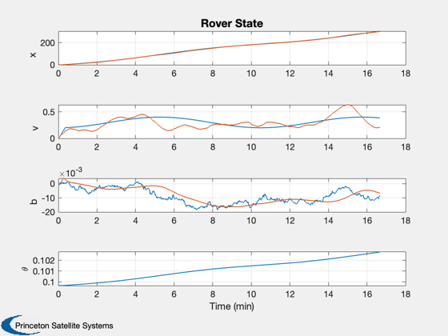
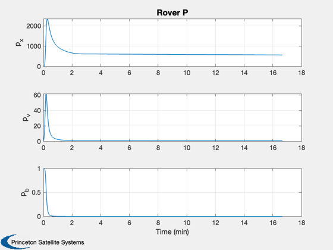

A UKF for estimating position, velocity and accelerometer bias.
The measurement is the angle to a fixed reference height h above the ground.
The state equations are linear but the measurement equation is nonlinear. The UKF allows us to use the latter directly.
The name is Rover1D because the measurement is similar to a sextant and the motion is 1 dimensional like a surface rover moving in a straight line. It does not model any real ground vehicle dynamics.
See also Plot2D, TimeLabl, RK4, UKF ------------------------------------------------------------------------
Contents
%-------------------------------------------------------------------------- % Copyright (c) 2007 Princeton Satellite Systems, Inc. % All rights reserved. %-------------------------------------------------------------------------- clear p; clear d;
Sim length and time step
%------------------------
n = 1000;
dT = 1;
Plotting array and initial state
%---------------------------------
xP = zeros(10,n);
x = [0;0;0];
Parameters
%-----------
xTarg = 10000;
h = 1000;
p is passed to the UKF
%----------------------- p.x = x; p.rHSFun = 'RHS1DWithAccelUKF'; p.measFun = 'HAngleUKF'; p.measFunData = struct('h',h,'xTarget',xTarg); p.rHSFunData = struct('a',0);
UKF parameters
%---------------
p.alpha = 0.5;
p.kappa = 0;
p.beta = 2;
p.dY = 1;
p.dT = dT;
Plant measurement noise
%------------------------
d.sigma = 0.001;
Measurement and plant covariances
%----------------------------------
p.rM = d.sigma^2;
p.rP = 0.00001;
Initial covariance
%------------------- p.p = diag([1 1 1]); p = UKF('initialize', p ); % The simulation. The acceleration is initially a constant
plus a sine wave but them becomes just a sine wave
%--------------------------------------------------------- t = 0; for k = 1:n % Nonlinear angle measurement %---------------------------- theta = atan(h/(xTarg - x(1))); % Save for plotting %------------------ xP(:,k) = [x;p.x;theta;diag(p.p)]; % External acceleration %---------------------- aSine = 0.001*sin(0.01*t); if ( t < 20 ) d.a = 0.01 + aSine; else d.a = aSine; end % The measured acceleration includes the bias %-------------------------------------------- aMeas = d.a + x(3); % Simulation %----------- x = RK4('RHS1DWithAccel',x,dT,0,d); t = t + dT; % Kalman Filter %--------------- p.t = t; p.rHSFunData.a = aMeas; p = UKF( 'update', p, theta ); end
Plotting
%--------- [t, tL] = TimeLabl( (1:n)*dT ); Plot2D( t, xP(1:7,:), tL, {'x' 'v' 'b' '\theta'}, 'Rover State', 'lin',... {'[1 4]' '[2 5]' '[3 6]' '[7]'}) Plot2D( t, xP(8:10,:), tL, {'p_x' 'p_v' 'p_b' }, 'Rover P') %-------------------------------------- % PSS internal file version information %-------------------------------------- % $Date$ % $Id: 6779785f3c280d33a109a58e09b71ff7010e4631 $ 